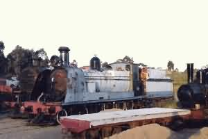
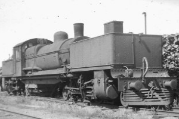
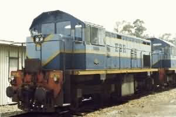
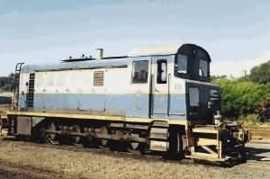
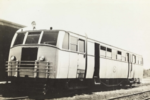
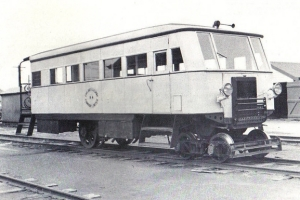

 No8 "Heemskirk" at Don River |
 Beyer Garratt Locomotive |
| Number | Wheel | Builder | Builder No | Built | Scrap | Notes |
| No1 | 4-4-0 | Hunslet | 305/1833 | 1883 | WA 1922 | |
| No2 | 4-4-0 | Hunslet | 306/1833 | 1883 | 1908 | |
| No3 | 0-6-4T | Neilson | 3765/1888 | 1888 | 1939 | |
| No4 | 2-6-0 | Martin | 168/1897 | 1898 | 1962 | |
| No5 | 2-6-0 | Martin | 169/1897 | 1898 | 1963 | |
| No6 | 4-8-0 | Dubs | 3854/1900 | 1900 | 1963 | "Murchison" |
| No7 | 4-4-0 | Dubs | 3856/1900 | 1900 | 1962 | |
| No8 | 4-8-0 | Dubs | 3855/1900 | 1900 | 1963 | "Heemskirk" |
| No9 | 2-6-0 | Martin | 186/1906 | 1906 | 1962 | |
| No10 | 2-6-0 | Beyer Peacock | 5154/1908 | 1908 | PWD 1920 | |
| No10 #2 | 4-6-0 | Avonside | 1394/1899 | 1929 | 1950 | ex NML |
| No11 | 4-8-0 | North British | 19576/1911 | 1911 | 1963 | |
| No12 | 4-8-2+2-8-4 | Beyer Garratt | 6580/1929 | 1929 | 1963 | |
| No13 | 4-8-2+2-8-4 | Beyer Garratt | 6581/1929 | 1929 | 1961 | |
| No14 | 4-8-2+2-8-4 | Beyer Garratt | 6582/1929 | 1929 | 1964 | |
| No15 | 4-6-0 | Avonside | 1392/1899 | 1930 | 1958 | ex NML |
| No16 | 4-8-2+2-8-4 | Islington, SA | 86/1944 | 1948 | 1966 | ASG G16 |
| No17 | 4-8-2+2-8-4 | Clyde, NSW | 473/1944 | 1948 | 1966 | ASG G23 |
| No18 | 4-8-2+2-8-4 | Islington, SA | 87/1944 | 1953 | 1964 | ASG G17 |
| No19 | 2-6-0 | Martin | 28/1892 | 1956 | 1963 | ex TGR |
| No20 | 4-8-2+2-8-4 | Clyde, NSW | 476/1944 | 1961 | 1962 | ASG G25 |
| No20A | 4-8-2+2-8-4 | Islington, SA | 82/1944 | 1962 | 1964 | ASG G12 |
 1106 at Primrose Junction |
 No21 PVH1 Shunter at Burnie |
| Number | Wheel | Builder | Builder No | Built | Notes |
| EZ Co | B | Ruston Hornby | 284836/1950 | 1950 | 88 HP at Rosebery |
| No21 | D | North British | 27084/1954 | 1954 | 530 HP "PVH1" |
| No22 | C | Vulcan Drewry | 2405/D193/1953 | 1963 | 204 HP ex Mt Lyell |
| 1001 | Bo-Bo | Walkers Bros | 576/1963 | 1963 | 690 HP |
| 1002 | Bo-Bo | Walkers Bros | 577/1963 | 1963 | 690 HP |
| 1003 | Bo-Bo | Walkers Bros | 578/1963 | 1963 | 690 HP |
| 1004 | Bo-Bo | TGR Launc. | xxx/1966 | 1966 | 690 HP |
| 1101 | Bo-Bo | Walkers Bros | 638/1969 | 1969 | 770 HP |
| 1102 | Bo-Bo | Walkers Bros | 639/1969 | 1969 | 770 HP |
| 1103 | Bo-Bo | Walkers Bros | 640/1969 | 1969 | 770 HP |
| 1104 | Bo-Bo | Walkers Bros | 641/1969 | 1969 | 770 HP |
| 1105 | Bo-Bo | Walkers Bros | 642/1969 | 1969 | 770 HP |
| 1106 | Bo-Bo | Walkers Bros | 658/1970 | 1970 | 770 HP |
| 1107 | Bo-Bo | Walkers Bros | 659/1970 | 1970 | 770 HP |
| Number | Wheel | Builder | Engine | Built | Scrap | Notes |
| No1 | 4 | EBR | Berliet | 1918 | 15 passengers | |
| No2 | 8 | EBR | Mercury V8 | 1920 | 20 passengers | |
| No3 | 8 | EBR | V8 | 1925 | 20 passengers | |
| No4 | B'-1 | EBR | Cadillac V8 | 1933 | ||
| No5 | B'-1 | EBR | Cadillac V8 | 1933 | ||
| No6 | Bo-Bo | Drewry Car Co. | Gardner | ex TGR 102 HP | ||
| No7 | Bo-Bo | Drewry Car Co. | Gardner | ex TGR 102 HP | ||
| No8 | Bo-Bo | Waddingtons | 1938 | ex TGR 22 pass | ||
| WG1 | Bo-Bo | Walkers Bros | Gardner | 1940 | 1969 | 48 passengers |
| PT1 | Bo-Bo | TGR | Trailer 34 pass | |||
| PT2 | Bo-Bo | EBR | Trailer 12 pass |
 EBR Railmotor Walkers WG-1 |
 EBR Railmotor M4 |